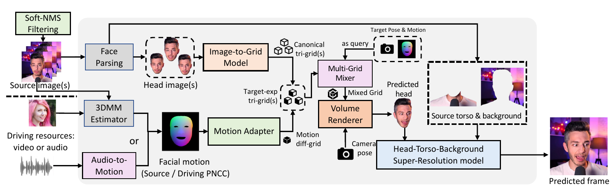

In ZeRa-Portrait, we improve the performance of our recent one-shot NeRF-based talking face generation method, Real3D-Portrait (ICLR 2024), and extend it into the few-shot setting with a coarse-to-fine information aggregation framework.
Zero-shot 3D talking portrait generation aims to reconstruct a 3D avatar from image(s) unseen during training, and then generate a realistic talking portrait video by driving the avatar with audio/motion condition. Previous neural radiance field (NeRF)-based methods have shown that a 3D modeling of the talking avatar could significantly improve the perceptual quality of the generated video, especially when driven by a large pose. However, adopting the 3D prior of NeRF into zero-shot talking face generation has been faced with several challenges: (1) it is hard to reconstruct an accurate 3D avatar from an unseen image; (2) once the 3D avatar is obtained, it is also non-trivial to control its face expression without damaging identity similarity and temporal stability; (3) joint modeling of the head, torso, and background segments leads to visible artifacts; (4) previous works focus on one-shot reconstruction, which limits the model's scalability to utilize more reference images that are potentially available during inference. To handle these challenges, we present ZeRa-Potrait, a framework that (1) achieves high-quality zero-shot 3D face reconstruction with a large-scale pre-trained image-to-grid model; (2) facilitates effective and stable facial expression control with a motion adapter that learns minimal geometry change from the source to target expression; (3) individually models the head/torso/background segments and produce realistic video at 512$\times$512 resolution; (4) supports arbitrary numbers of reference images for reconstructing the 3D avatar with a coarse filtering strategy for selecting reference images as well as a attention-based multi-grid mixer for multi-frame information aggregation. Extensive experiments show that ZeRa-Portrait generalizes well to unseen identities and generates more realistic talking portrait videos than previous audio/video-driven methods.
The overall inference process of ZeRa-Portrait is demonstrated as follows:

CTFG model denotes "coarse-to-fine generic" model in our ZeRa-Portrait, which consists of a soft-NMS-style coarse filtering strategy to select a fixed number of high-value reference images from arbitrary numbers of images, as well as an attention-based multi-grid-mixer for fine-grained multi-frame information aggregation.